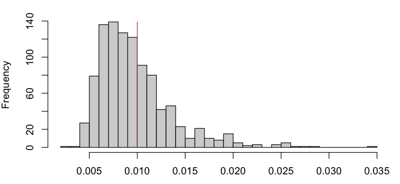
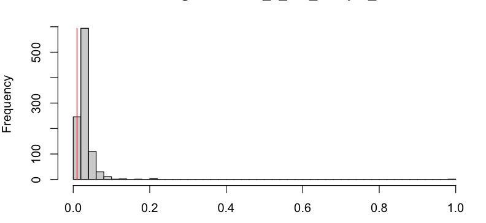
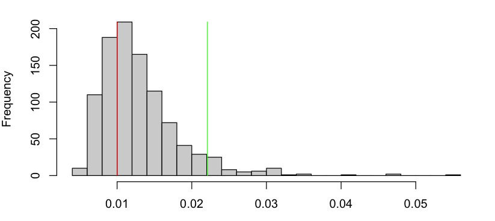

Començarem considerant un dels exemples que vam veure al Tema 2:
Durant els nostres experiments de control de qualitat, observem que el circuit falla després de 57, 49, 8, 234, 4, 181, 153,22, 91, 11 dies.
Està respectant el fabricant de components la garantia?
Al Tema 2, vem aprendre que \(Y\), el temps de vida del circuit, seguia una distribució geomètrica amb paràmetre \(\rho_Y = 1 - (1-\rho_X)^K\), i vem derivar-ne l’EMV:
Apartir d’això vam estimar:
i vam concloure que el fabricant estava respectant la garantia, ja que \(\hat{\rho}_X \ll 0.01\).
Però què decidirieu si ens hagués sortit \(\hat{\rho}_X \approx 0.01\)? O \(\hat{\rho}_X \approx 0.008\)?
De la teoria del Tema 2, sabem que l’EMV \(\hat{\rho}_Y\) és una quantitat aleatòria, i per tant \(\hat{\rho}_X\) també. Per exemple, vegem la distribució de \(\hat{\rho}_X\) quan \(\rho_X=0.008\):
Quan \(\rho_X = 0.008\), \(P(\hat{\rho}_X > 0.01; \rho_X = 0.008) \approx 37\%\)! Si \(\rho_X = 0.0001\), aquesta probabilitat és més petita, però no és nula. Això és degut a l’error d’estimació (l’EMV és consistent asimptòticament, però estem treballant amb mostres finites!). Això s’anomena un Fals Positiu.
Per altra banda, suposem que \(\rho_X = 0.02\) (2x més gran que 1%). Degut a l’aleatorietat de \(\hat{\rho}_X\), també tindrem una probabilitat no nula de que \(\hat{\rho}_X < 0.01\):
Decidir que, en base a les observacions, \(\rho_X < 0.01\) quan en realitat \(\rho_X > 0.01\) s’anomena un Fals Negatiu.
Malgrat aquestes dues observacions, la intuició ens diu que si \(\hat{\rho}_X\) és molt més petit que \(\rho_c = 0.01\), o de manera equivalent, \(T := \hat{\rho}_X - \rho_c\) és prou petit, hauriem de poder afirmar que \(\rho_X\) és efectivament més petit que 0.01 i per tant el fabricant està complint la garantia.
Ja podem definir alguns conceptes claus:
Quan escollim \(T_0\), determinem implícitament la quantitat de Falsos Positius i Falsos Negatius que tindrem. En aquest exemple, quan més gran \(T_0\), menys “estricte” és el nostre criteri, i per tant més Falsos Positius i menys Falsos Negatius. Quan més petit, a l’inversa.
La intuició que estem fent servir sembla raonable però ens falta una manera quantitativa d’escollir quan \(T\) és “prou petit” o no (és a dir, escollir el valor crític \(T_0\).) El paradigma que utilitzarem ens permetrà fer això. Però primer haurem de definir una sèrie de conceptes:
Per tant, per especificar un test i caracteritzar-lo, necessitarem especificar \(H_0\), \(H_1\), i la regió crítica…
Normalment primer escollirem un nivell de significació \(\alpha\), i a partir del mateix escollirem \(T_0\) de manera que:
Això determinarà implícitament la potència del test \(1 - \beta = P(T > T_0 ; H_1)\).
Fixeu-vos que hi ha una “asimetria” entre \(H_0\) i \(H_1\), i que les escull el practicant…
Per trobar el valor crític amb una significació de \(\alpha=0.05\), simularem \(Y \sim \mbox{Geomètrica}(1 - (1-\rho_X)^K)\) amb \(\rho_X=0.01\), i buscarem \(T_0\) tal que \(P(T > T_0 ; H_0) = \alpha = 0.05\):
Fixeu-vos que per tenir una significació de \(\alpha=0.05\), només podrem rebutjar l’hipòtesi Nula si \(\hat{\rho}_x > 0.022\)! (això és en part perquè en el nostre exemple N=10, i degut això la variança del nostre estimador és gran).
Considereu els tests PCR que es fan per detectar la COVID-19.
El paradigma que hem explicat fins ara ens guia per escollir el valor crític \(T_0\) quan ja tenim un estadístic de test \(T\) ( a l’exemple, \(T = \hat{\rho}_X - 0.01\)) sobre el que treballar, i una idea sobre quina hauria de ser la regió crítica (a l’exemple \(T > T_0\)).
El següent Lemma estableix com construïr tests òptims per hipòtesis simples, és a dir hipòtesis definides a partir del paràmetre \(\theta\) d’una població caracteritzada per una f.d.p o f.m.p \(f_X(x;\theta)\):
Lema 4.1 (de Neyman-Pearson, 1933): Per una mostra \(X_1, \cdots, X_N\) i \(H_0\) i \(H_1\) hipòtesis simples, el test basat en l’estadístic de raó de versemblances \(T = \frac{f(X_1, \cdots, X_N; \theta_0)}{f(X_1, \cdots, X_N; \theta_1)}\) amb regió crítica \(T \leq T_0\) i significació \(\alpha\), és el test amb més potència amb nivell de significació \(\alpha\).
Fixeu-vos que la versemblança d’una mostra:
és més gran quan més versemblant és que la mostra \(X_1, \cdots, X_N\) hagi estat generada per el paràmetre \(\theta\). (Aquest és el mateix principi que vam fer servir per justificar el Mètode de Màxima Versemblança per estimar \(\theta\) a partir de \(X_1, \cdots, X_N\)).
Per tant, si l’evaluem a dos valors diferents de \(\theta\), \(\theta_0\) i \(\theta_1\), \(f_X(X_1, \cdots, X_N; \theta)\) hauria de ser més gran per aquell valor que és més versemblant segons les dades. En conseqüència, l’estadístic
serà gran quan \(\theta_0\) és més versemblant que \(\theta_1\) i petita en el cas contrari. Això justifica que refusem l’hipòtesi nula \(\theta=\theta_0\) quan \(T \leq T_0\) per algun \(T_0\) a escollir.
Considereu una mostra iid \(X_1, \cdots, X_N\) normal i de variança coneguda \(\sigma^2\), obtinguda a partir de les mesures d’un sensor de detecció d’infra-rojos. Quan davant del sensor hi ha un objecte, es mesura una senyal amb mitja \(\mu_1\), quan no, amb \(\mu_0\).
Com que es tracta d’hipòtesis simples, segons el Lema 4.1 de Neyman-Pearson és òptim fer servir el test de raó de versemblances. L’estadístic és:
Fixeu-vos doncs que \(T\) depèn únicament de la mostra a través de \(\bar{X}\). Per exemple, si \(\mu_0 > \mu_1\), \(T\) és petit si \(\bar{X}\) és petit, per tant rebutjarem \(H_0\) si \(\bar{X}\) és petita. Per tant, per aquest test, enlloc de fer servir \(T\) com estadístic, podem fer servir directament \(\bar{X}\)!
Ens queda només trobar el valor crític \(T_0\) tal que \(P(T \leq T_0; \mu_0) = \alpha\).
Com hem vist, \(T\) només depèn de la mostra a través d’una funció monotònica d’ \(\bar{X}\), per tant la regió crítica es pot expressar en funció d’\(\bar{X}\):
per \(X_0 = \frac{1}{2\left(\mu_0 - \mu_1\right)}\left(\frac{2 \sigma^2\log(T_0)}{N} + \mu_0^2 - \mu_1^2 \right)\).
Es a dir, enlloc de buscar \(T_0\) tal que \(P(T \leq T_0; \mu_0) = \alpha\), buscarem directament \(X_0\) tal que \(P(\bar{X} \leq X_0; \mu_0) = \alpha\).
Per continuar, fixem-nos que sota \(H_0\), \(X_1, \cdots, X_N \sim \mathcal{N}(\mu_0, \sigma^2)\) per tant [Diapo 29, Tema 2]:
Podem doncs trobar \(X_0\) manipulant l’expressió de significació:
on tenim que \(\frac{\bar{X} - \mu_0}{\sqrt{\frac{\sigma^2}{N}}} \sim \mathcal{N}(0, 1)\).
Així doncs, només caldrà trobar \(X_0\) tal que:
on \(\phi(x)\) és la f.d.c. inversa d’una normal estàndard. Finalment:
i per tant (en el cas on \(\mu_0 > \mu_1\)) rebutjarem l’hipòtesi nula quan \(\bar{X} \leq \mu_0 + \sqrt{\frac{\sigma^2}{N}}\left(1 - \phi(\alpha)\right)\)
Exercici: Quin valor crític \(X_0\) i regió crítica tindriem si enlloc de \(\mu_0 > \mu_1\) tenim que \(\mu_0 \leq \mu_1\)?
El test de Raó de Versemblances té propietats teòriques interessants (Lema 4.1.) però és d’aplicació pràctica limitada, ja que sovint les nostres hipòtesis seràn compostes, és a dir, del tipus:
on \(\Theta_0\) i \(\Theta_1\) són subconjunts de \(\Theta\) i per tant el test de Raó de Versemblances no és aplicable.
Per exemple, el nostre exemple inicial es tractava d’hipòtesis compostes:
Donada una mostra \(X_1, \cdots, X_N\) d’una població amb f.d.p. \(f_X\), i versemblança \(f(X_1, \cdots, X_N; \theta)\), el Test de Raó de Versemblances Generalitzat, es basa en el següent estadístic:
(fixeu-vos que al denominador el max és respecte \(\Theta\) no \(\Theta_1\) amb regió crítica:
i \(\lambda_0\) tal que \(P(\Lambda \in \lambda_0; \theta_0) = \alpha, \forall \theta_0 \in \Theta_0\).
Per evaluar l’estadístic del test d’RVG, cal doncs trobar l’EMV sota cada una de les hipòtesis
Considereu una mostra iid \(X_1, \cdots, X_N\) normal i de variança coneguda \(\sigma^2\).
Volem testejar si la mitja de la població és un valor donat \(\mu_0\) o no. Les hipòtesis son doncs:
Podeu pensar en una situació pràctica on voldriem testejar aquesta hipòtesi?
Com que l’hipòtesis nula és simple, en aquest exemple, l’estadístic del test RVG és:
Per tant haurem de trobar l’EMV (\(\max_{\theta \in \Theta} f(X_1, \cdots, X_N; \theta)\)) per calcular-lo. Però al tractar-se d’una mostra normal, ja sabem que l’EMV de la mitja \(\mu\) és simplement la mitjana aritmètica de la mostra:
\(\hat{\mu} = \bar{X}\)
Per tant en aquest exemple l’estadístic es simplifica a:
on \(f_X\) és la f.d.p d’una Gaussiana.
Al numerador tindrem
\(\frac{1}{\left(\sqrt{2\pi\sigma^2}\right)^N}\exp\left(-\frac{1}{2\sigma^2}\sum_i(X_i - \mu_0)^2 \right)\)
i al denominador
\(\frac{1}{\left(\sqrt{2\pi\sigma^2}\right)^N}\exp\left(-\frac{1}{2\sigma^2}\sum_i(X_i - \bar{X})^2 \right)\)
Per tant, trobarem:
Amb una mica d’àlgebra, això es pot simplicar a
per tant la regió crítica serà:
arribem a:
És a dir, rebutjarem \(H_0\) quan la diferència entre \(\bar{X}\) i \(\mu_0\) sigui prou gran, relativa a la variança de \(\bar{X}\).
De nou, com que la mostra es Gaussiana, \(\frac{\bar{X} - \mu_0}{\sqrt{\frac{\sigma^2}{N}}} \sim \mathcal{N}(0, 1)\) i per tant podem trobar el valor crític \(\lambda_0\) com segueix:
Per tant: